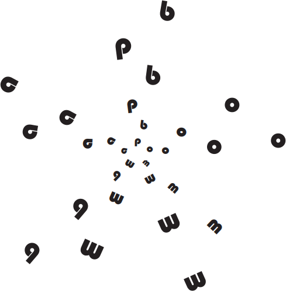

CAMPOS, A. Despoesia. São Paulo: Perspectiva, 1994 (adaptado).
Augusto de Campos é um artista concretista brasileiro cuja poética estabelece a relação de diálogo
entre o aspecto visual, sonoro e tátil do texto verbal.
Com base no poema apresentado, avalie as afirmações a seguir.
-
O aspecto sensorial é construído por meio da exploração da dimensão visual das palavras, sendo a
imagem um elemento essencial do texto.
-
O artista utiliza técnicas de diagramação, harmonizando os componentes gráficos e espaciais, que
se transformam em elementos de construção de sentidos diversos.
-
A impressão de movimento caótico cria o efeito de uma espécie de big-bang que atua sobre ambas
as palavras: poema e bomba.
-
A utilização do espaço é secundária para a construção de sentidos da obra, já que a palavra escrita,
nesse caso, é suficiente para a leitura do poema.
É correto o que se afirma em
-
I, apenas.
-
II e IV, apenas.
-
III e IV, apenas.
-
I, II e III, apenas.
-
I, II, III e IV.